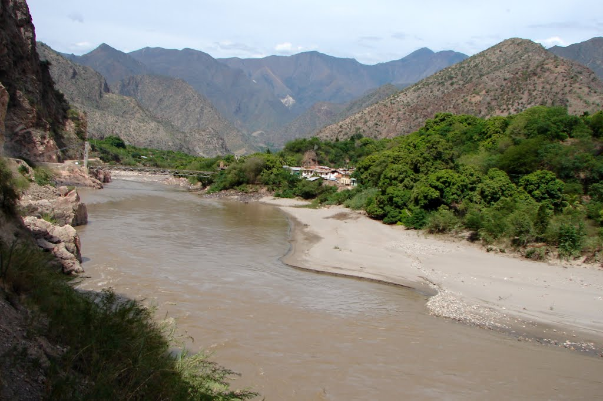

Río Marañón

üßæ Ficha T√©cnica
- Ubicación: Nace en la sierra norte del Perú
- Longitud: 1,414 km
- Afluente: Forma el Amazonas junto al Ucayali
- Importancia: Fuente de biodiversidad e hidroenergía
- Dato curioso: Forma cañones profundos como el Pongo de Manseriche.
← Volver